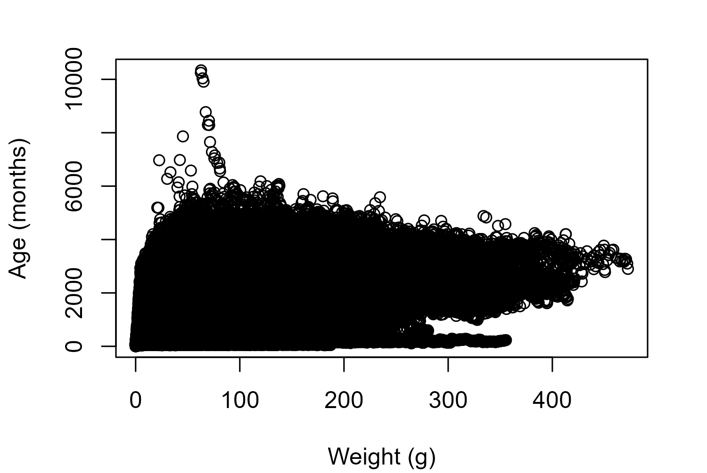
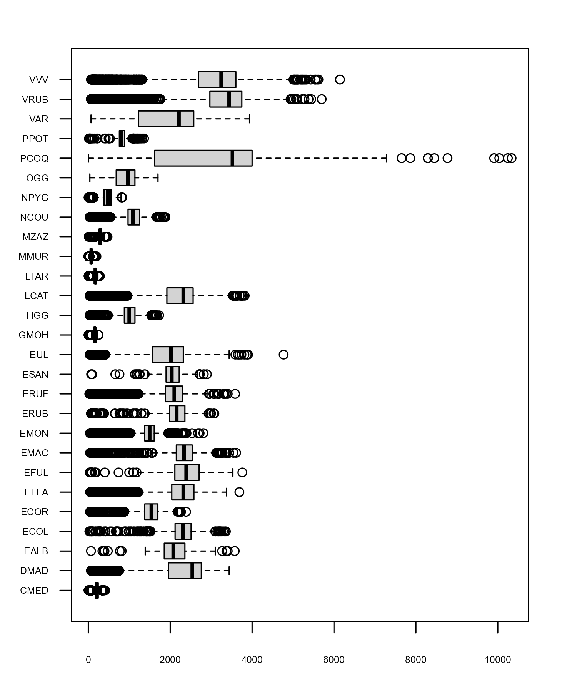
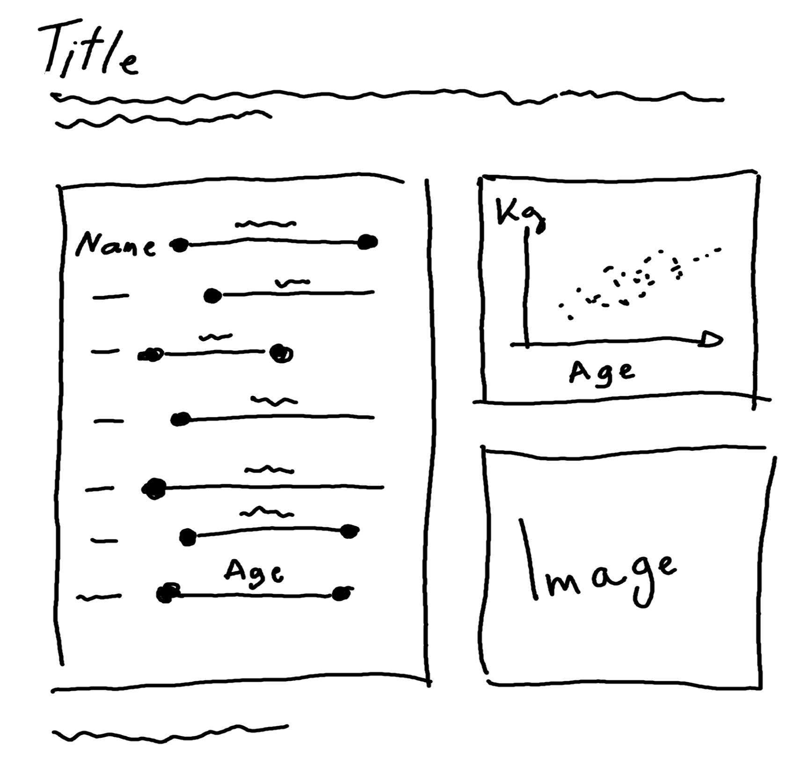
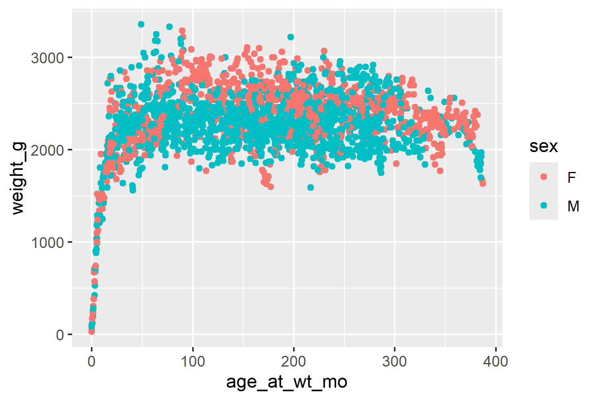
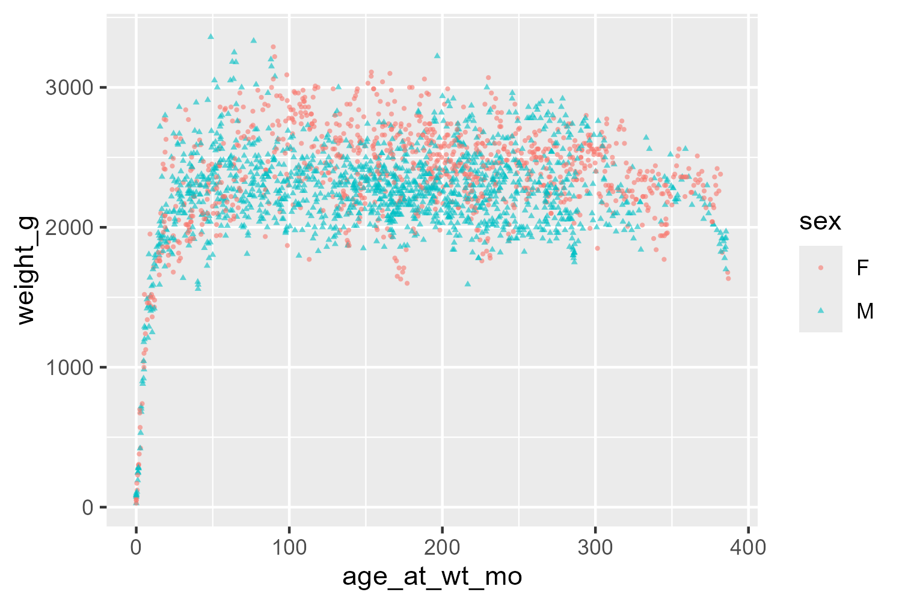
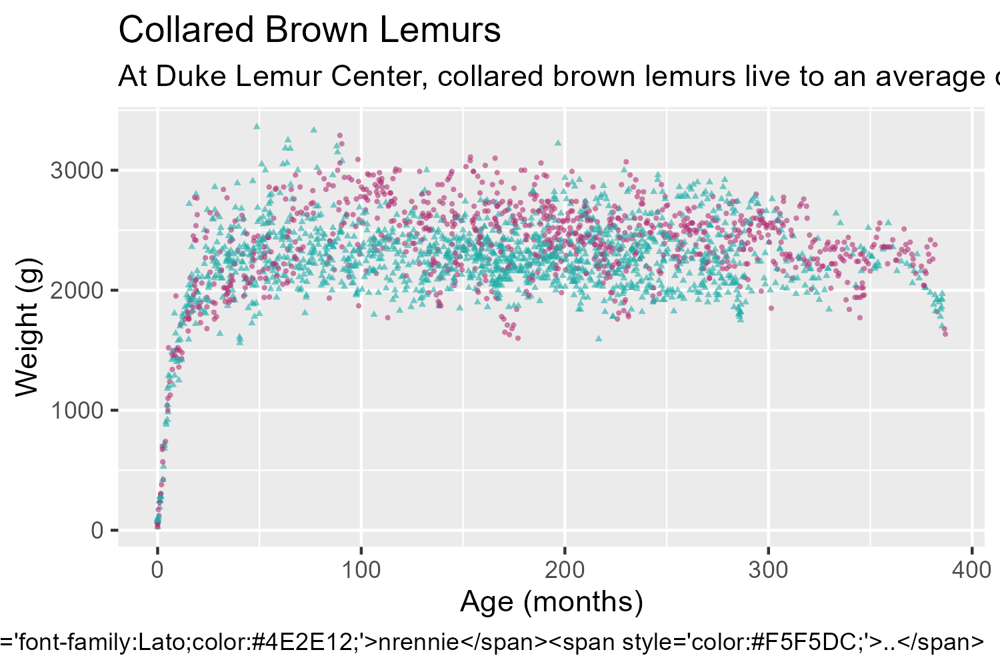
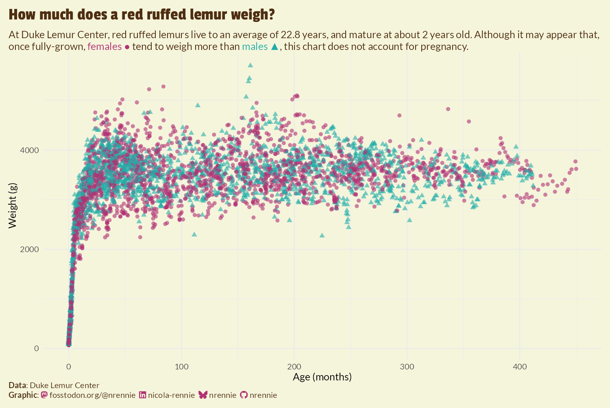
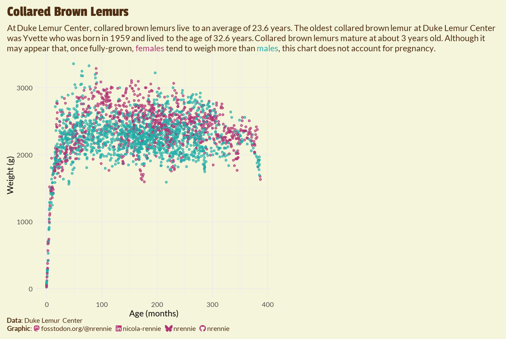
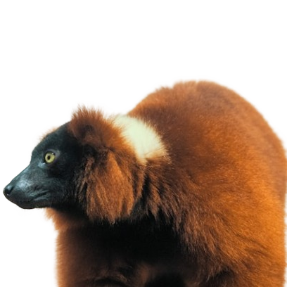
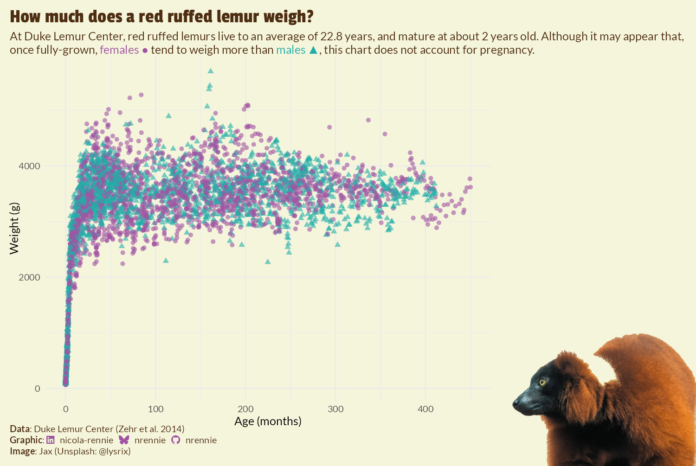

tuesdata <- tidytuesdayR::tt_load("2021-08-24")
lemurs <- tuesdata$lemurs9 Lemurs: manipulating images with {magick}
In this chapter, we’ll cover how to load and manipulate images in R using the {magick} package. We’ll also look at how to combine images with plots using the {cowplot} package.
9.1 Data
We’re going to be exploring data about lemurs from Duke Lemur Center in this chapter (Zehr et al. 2014). The data …
The data was used as a TidyTuesday dataset in August 2021, and so can be loaded into R using the tt_load() function from {tidytuesdayR} as we’ve done in previous chapters:
The data
9.2 Exploratory work
9.2.1 Data exploration
Some of the
plot(
lemurs$age_at_wt_mo,
lemurs$weight_g
)

boxplot(
weight_g ~ taxon,
data = lemurs,
horizontal = TRUE,
cex.axis = 0.5,
cex.names = 0.5,
las = 1,
xlab = "Weight",
ylab = NULL
)

9.2.2 Exploratory sketches

9.3 Preparing a plot
The data is reasonably clean
9.3.1 Data wrangling
cb_lemurs <- lemurs |>
dplyr::filter(taxon == "ECOL")9.3.2 The first plot
library(ggplot2)
base_plot <- ggplot() +
geom_point(
data = cb_lemurs,
mapping = aes(x = age_at_wt_mo, y = weight_g, color = sex)
)
base_plot

note about assumptions - females heavier than males
- make points smaller and add some transparency
base_plot <- ggplot() +
geom_point(
data = cb_lemurs,
mapping = aes(x = age_at_wt_mo, y = weight_g, color = sex, shape = sex),
alpha = 0.6,
size = 0.6
)
base_plot
9.4 Advanced styling
9.4.1 Colors
ref to blog post male femlae stereotypes
bg_col <- "#F5F5DC"
text_col <- "#4E2E12"
f_col <- "#B13173"
m_col <- "#21ADA8"We’ll use colored text in the subtitle to distinguish the two categories as we did in Chapter 6, and so we don’t need a legend added. We’ve previously removed the legend by setting legend.position = "none" inside the theme() function, but an alternative approach is to set guide = "none" inside scale_color_manual(). This is particularly useful if you only want to remove a subset of legends when you are mapping multiple variables to different aesthetics.
in this case we do want to
col_plot <- base_plot +
scale_color_manual(
values = c("F" = f_col, "M" = m_col),
guide = "none"
) +
scale_shape(guide = "none")9.4.2 Fonts and text
going to be using icons - showtext doesn’t work well with this - cross ref this section in chap 1 we’ll use systemfonts instead. (Pedersen, Ooms, and Govett 2024)
use same name as in original font awesome and social cap will still work
systemfonts::register_font(
name = "Font Awesome 6 Brands",
plain = "fonts/Font-Awesome-6-Brands-Regular-400.otf"
)need to download font files from google fonts, can install on system and use ragg. may not have admin priviledges
systemfonts::register_font(
name = "Lato",
plain = "fonts/Lato/Lato-Regular.ttf",
bold = "fonts/Lato/Lato-Bold.ttf",
italic = "fonts/Lato/Lato-Italic.ttf"
)
systemfonts::register_font(
name = "Passion One",
plain = "fonts/Passion_One/PassionOne-Regular.ttf",
bold = "fonts/Passion_One/PassionOne-Bold.ttf"
)
body_font <- "Lato"
title_font <- "Passion One"coloured text below??? remove guide for shape add shapes in unicode (doesn’t exactly match shape ▲ - black triangle, really just means “filled” in triangle, rather than outlines white triangle)
title <- "Collared Brown Lemurs"
subtitle <- glue::glue("At Duke Lemur Center, collared brown lemurs live to an average of 23.6 years. The oldest collared brown lemur at Duke Lemur Center was Yvette who was born in 1959 and lived to the age of 32.6 years. Collared brown lemurs mature at about 3 years old. Although it may appear that, once fully-grown, <span style='color:{f_col}'>females ●</span> tend to weigh more than <span style='color:{m_col}'>males ▲</span>, this chart does not account for pregnancy.")pre-emptive - or maybe update later
social <- social_caption(
bg_color = bg_col,
icon_color = f_col,
font_color = text_col,
font_family = body_font
)
cap <- source_caption(
source = "Duke Lemur Center",
sep = "<br>",
graphic = social
)text_plot <- col_plot +
labs(
title = title,
subtitle = subtitle,
caption = cap,
x = "Age (months)", y = "Weight (g)"
)
text_plot

9.4.3 Adjusting scales and themes
still need to edit grid lines and axis text labels formatting colors
theme_plot <- text_plot +
theme_minimal(base_size = 6, base_family = body_font) +
theme(
# background
plot.margin = margin(5, 5, 5, 5),
plot.background = element_rect(
fill = bg_col, color = bg_col
),
# text
plot.title.position = "plot",
plot.caption.position = "plot",
plot.title = element_text(
family = title_font,
size = rel(1.7),
color = text_col,
margin = margin(b = 5)
),
plot.subtitle = ggtext::element_textbox_simple(
color = text_col
),
plot.caption = ggtext::element_textbox_simple(
hjust = 0, halign = 0,
color = text_col
)
)
theme_plot

We’re going to add the image to the right hand side of the plot. The approach we’re taking requires us to make some blank space. Perhaps the simplest approach is to increase the size of the margin on the right hand side of the plot using the plot.margin argument in theme():
However, as you can see in Figure 9.7, this approach results in the title and subtitle text also being squashed to the left hand side of the plot as it doesn’t extend into the margin. This may be desirable for some plots, but it doesn’t work well here. Another approach is to use the expand argument in scale_x_continuous() to increase the amount of space at the right hand side of the x-axis. However, since this extends the axis, this results in grid lines being included in the additional space. We could play around with the breaks and axis text to remove the unwanted components, but there’s an easier (slightly hacky) solution: add and edit a secondary y-axis.
Secondary axes are almost always a poor choice of chart due to the fact that the choice of transformation for the secondary axis is entirely arbitrary but can hugely impact how the plot is interpreted. However, we’re not actually going to use the secondary axis to present data, we’re only going to use it to manipulate the layout of the plot background. To add some additional margin space on the right hand side, without squashing the title or adding grid lines in the margin, we can:
- Duplicate the y-axis to create a secondary y-axis on the right hand side by setting
sec.axis = dup_axis()insidescale_y_continuous(). Thesec_axis()function could be used instead ofdup_axis(), but there’s no need to transform the axis in any way. - Add lots of margin space to the secondary axis labels by expand the right margin using
margin = margin(r = 150)for theaxis.text.y.rightargument oftheme(). - Then hide the secondary axis labels by making them the same color as the background through also setting
color = bg_colforaxis.text.y.right.
We also remove the title by setting axis.title.y.right to element_blank().
styled_plot <- theme_plot +
scale_y_continuous(sec.axis = dup_axis()) +
theme(
axis.text.y.right = element_text(
margin = margin(r = 150),
color = bg_col
),
axis.title.y.right = element_blank()
)
styled_plot

9.5 Working with images
Though you might not often find instructions , there are many reasons why you may wish to combine … such as adding a company logo for consistent branding in plots or … . If you do add images to plots, .
where to find images - unsplash Jax (@lysrix) (2017)
9.5.1 Reading and manipulating images with {magick}
The {magick} package (Ooms 2024) provides bindings to the ImageMagick image processing library magick
We can read an image into R using the image_read() function from {magick}:
lemur_img <- magick::image_read("images/lemur-nobg.png")
lemur_img
When you print the image, it returns the image itself to the plot window, but also returns output to the console with information about the image dimensions, format, and file size.
Tip 9.1: Alternative packages for image processing
The {magick} package is not the only R package that enables you to process and manipulate images. A popular alternative is the {imager} package (Barthelme 2024) which is based on CImg, a C++ library by David Tschumperlé. Both packages have their strengths, and it’s easy to use both at the same time via the cimg2magick() and magick2cimg() conversion functions in {imager}. In this chapter, we’ve used the {magick} package but you could do alternatively use the {imager} package instead.
9.5.2 Adding images to plots with {cowplot}
Before we go ahead with adding the image to the scatter plot, let’s first update the caption to add an attribution for the image, in addition to the attributions for the data and graphic. We can use paste0() to join together the output from the source_caption() function we were already using for the caption, with some additional styled text. You’ll see that this new text is similar to the text described in Chapter 6, with <br> adding a new and ** used to style the word Image in bold text. We can then override the existing caption in the labs() function.
The {cowplot} package (C. O. Wilke 2024)
Tip 9.2: R packages for combining plots
There are several other R packages available for arranging different elements together e.g. combining multiple plots or adding images to plots. The most common for arranging charts is the {patchwork} package (Pedersen 2024) which we’ll use this in Chapter 13 and Chapter 14. The {egg} package is also … .
We start by using the ggdraw() function from {cowplot} which sets up a layer on top of our styled_plot {ggplot2} plot to allow us to draw on top of it.
final_plot <- cowplot::ggdraw(styled_plot) +
cowplot::draw_image(
lemur_img,
x = 1, y = 0,
hjust = 1, halign = 1,
vjust = 0, valign = 0,
width = 0.4
)
final_plot

Tip 9.3: Other approaches for adding images to {ggplot2} plots
add tip for ggimage
9.6 Reflection
To do - check img credit is right - flip image back then flip in R - redo sketch
{kind=link}
{kind=link}
{kind=link}
{kind=link}
{kind=link}
{kind=link}
{kind=link}
{kind=link}